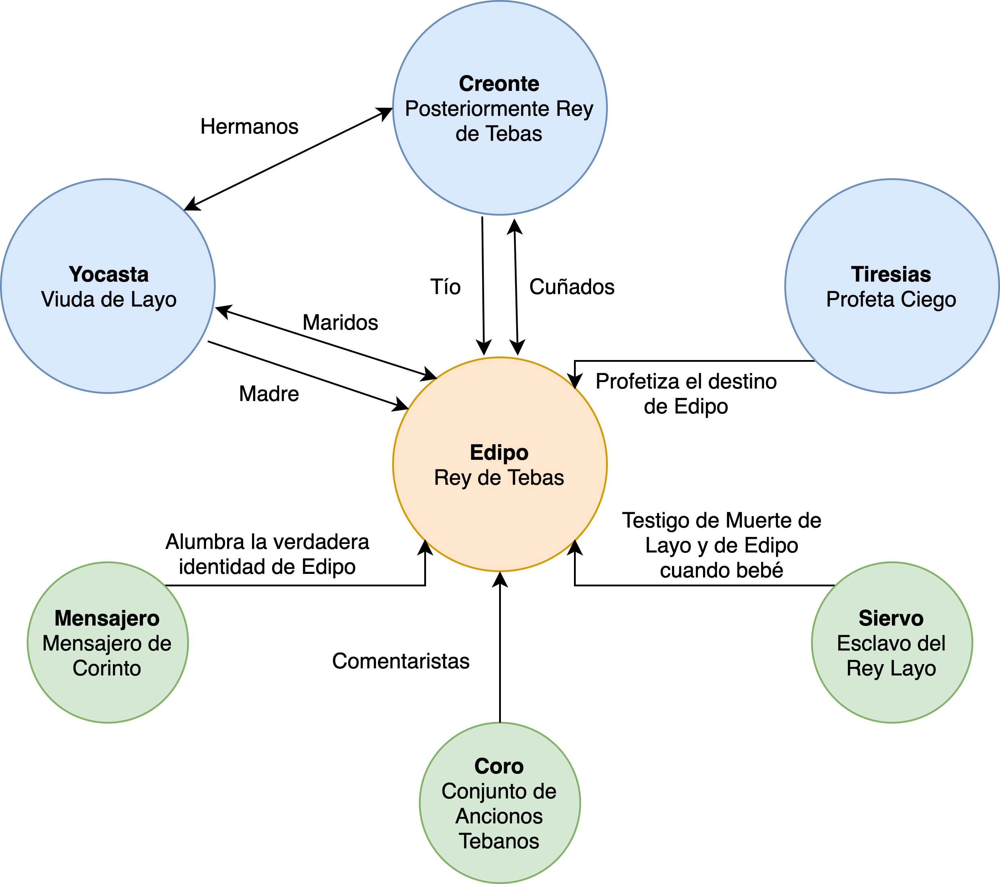

Personajes en Edipo Rey
En la tragedia Edipo Rey, es esperado que el lector tenga un conocimiento a fondo de varios personajes, ya que en el texto hay muchas alusiones a mitos griegos muy poco contextualizados. Por lo tanto, esta lista y diagrama de personajes tiene como propósito proveer un contexto al lector para poder comprender el rol de cada uno de los personajes. Cabe resaltar que el contenido de esta sección es adaptado de Oedipus Rex Characters. Si desea ver la fuente en formato APA, visita la pestaña titulada "Bibliografía".Diagrama de Personajes
Lista de Personajes
| # | A | B | C | D | E | F | G | H | I | J | K | L | M | N | Ñ | O | P | Q | R | S | T | U | V | W | X | Y | Z |
Antígona
Hija de Edipo y Yocasta.
Coro
Ofrece comentarios auxiliares que ayudan al lector poder interpretar y comprender los hechos sucedidos.
Creonte
Hermano de Yocasta, Creonte reina sobre Tebas con igual poder que Edipo y Yocasta. (lee el análisis completo)
Edipo
Se crío en Corinto pero se convirtió en rey de Tebas tras descifrar el enigma de la Esfinge. (lee el análisis completo)
Ismene
Hija menor de Edipo y Yocasta.
Layo
Anterior rey de Tebas, padre de Edipo, y esposo de Yocasta, fue asesinado por Edipo sin que él supiera su verdadera identidad.
Mensajero
Reporta la muerte de Pólibo, padre adoptivo de Edipo, y da a saber que Edipo fue abandonado cuando era un infante y posteriormente adoptado por Pólibo y Mérope. Además, este fue el pastor que recibió a Edipo del esclavo de Layo.
Niño
Guía del profeta ciego Tiresias.
Otro Mensajero
Narra la muerte de Yocasta y auto infligida ceguera de Edipo.
Siervo
Un pastor anciano, previamente esclavo de Layo. Este fue el único testigo sobreviviente del asesinato de Layo, además de ser quien entrego Edipo a un pastor corintio en vez de asesinarlo en su infancia.
Tiresias
Profeta ceigo de la ciudad de Tebas. (lee el análisis completo)
Yocasta
La viuda del anterior rey de Tebas, Layo, se casa con Edipo cuando él se convierte en rey. (lee el análisis completo)